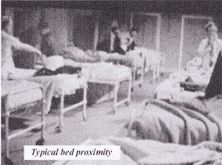
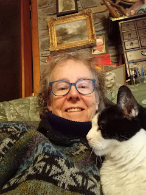

{kind=link}
Twice, last week, people complimented me on having ‘written so many books’. It was kindly meant, but not true. There are a dozen of them – and they give me lasting pleasure – but that’s not much in ‘real writer’ terms. Where I have been additionally lucky is to work on other people’s books. Again, only in small numbers, but it is a very special privilege to have the permission to get close to someone else’s thoughts and words by publishing their book.
This month Golden Duck publishing is taking three new books to the Southampton Boat Show: Scapa Ferry is an account of sailing courage, wild weather and sheer hard work in wartime; The Tuesday Boys tells a tale of foster love, expressed through sailing. It’s a heart warmer that leaves questions: How much can you truly help another person by teaching something new? Does it make a lasting difference to show another way of life? Can you ever mend the damage caused by the rejection of a child?
{kind=link}
{kind=link}
Both these books are reprints, so they’ve already been through another person’s professional editorial process. Our third title, From the Devil to the Deep Blue Sea by Clare Allcard, didn’t find a publisher when it was first written in the 1990s. Perhaps it was unlucky or perhaps its subject was still felt to be too difficult. Working with Clare this summer to present her typescript as a book, has been absorbing, though frequently distressing.
In 1965 Clare, then a 19-year-old student nurse, was raped on Hampstead Heath. Her shame and trauma were so great that she told no-one and buried the memory so deep that she forgot it. Instead, she began to experience a compulsion to kill herself. Her four attempts on her own life resulted in more than two years in psychiatric hospitals. This was without her consent as she was not yet 21. Her parents were asked to agree, first to her incarceration, then to ECT and finally to the ‘deep narcosis’ therapy. For them, naturally, the priority was to keep their daughter alive. They needed to trust the psychiatrists’ advice and Clare never blamed them for their acquiescence.
The issue of consent remains very difficult within mental health treatment. It did become somewhat more clearly formalised via the 1983 Act and is once again (2025) undergoing legal reform. In 1965 Clare had no rights. She had no say in her treatment, no choice over her freedom. By the time she legally became an adult, she was so damaged by institutionalisation that she failed to cope when she was able to discharge herself. Subsequently, when she attempted to refuse further ECT treatment and a move to the long stay asylum, she was detained ‘under section’ and her power of choice was withdrawn once again. She ended up in the building whose looming presence had over shadowed her childhood, St Francis County Asylum, Haywards Heath.
| St Francis Hospital, now closed and redeveloped |
{kind=link}
 |
| Inside St Francis, late 1960s |
.jpg){kind=link}
Clare’s story took an extraordinary turn when she recovered
sufficiently to write a letter to a letter to a yachtsman she’d read about in a
newspaper. She achieved her discharge and sailed the world. Perversely this
happy outcome inclined me to treat her book with an unjustified scepticism -- call
it the Raynor Winn effect, perhaps! I began checking the facts of everything
she wrote. They all proved accurate.
My research was also protective. Clare is about to be 80. Her mind, these days, functions with great clarity and good longer-term recall, but her immediate memory is startlingly unreliable. It’s disconcerting to receive the same highly intelligent and articulate email three times in a couple of days. Clare knows that she is in the early stages of a dementia and has strategies to cope, the most effective one being a complete honesty about her situation. I’ve discovered that it’s okay to tell her straight when she has forgotten to reply to a message or has done the same task several times. I hope I’ll remember (!) to adopt the same ‘no shame, no blame’ approach when my own forgetfulness becomes a more serious handicap.
It also means that she is eager to see her book
finally available. She wrote it almost thirty years ago – which was already
almost twenty years after the events described. Then, she still had an
excellent memory (despite the treatments), access to the letters she had sent
her family, the support of her husband and the capacity to research and fact
check for herself. Today, those people who were close to her are gone.
So are most of the psychiatrists who treated her, and some, but not all, of the hospitals where she was detained. Yet the culture of secrecy – or you can call it ‘confidentiality’ – within the mental health system is a strong one. The first advice that I was given (by a friendly mental health professor) was that all patient names, staff names and hospital names must be anonymised. Why? A historian, even a personal historian, like Tom Lee, writing about Severalls Hospital where his parents were treated, names the place and the people who managed it. (The Bullet 2024). How could he otherwise? Jon Stock, author of The Sleep Room (2025) an excoriating biography of psychiatrist William Sargant, energetic advocate of deep narcosis among other extreme treatments, could not have avoided identifying the man, his colleagues and their clinics. Why should Clare’s be different because she was a patient?
Patients willing to tell their stories within Jon
Stock’s book, are anonymous unless they choose to identify themselves. This clearly is right, given the
extreme imbalance of power within the mental health system. Even when part of
the motivation of a book -- like Clare’s -- is to speak openly about topics
like rape, trauma, and the mental health system, and to assert that there is no
more shame in being in a ‘loony bin’ than in a general hospital, it’s still not
easy.
Patients lost all privacy when they were within the system Clare
describes being required to sit within a room full of medical students, wearing
her dressing gown (clothes were often removed from patients to deter them from escaping), while the lead psychiatrist questioned her under the guise of a 'case conference'. Presumably he
would then have publicly analysed and discussed her responses had she not
refused to answer. Clare chose not to co-operate, even when
she liked her psychiatrists as people, because she was ‘fighting for
her mind’. Even when she felt defeated, Clare retained some residual confidence, probable from her secure family environment and happy nature.
Among her fellow-patients however, she met those who had been abused and
mistreated from their earliest years.
To have been rendered completely powerless is humiliating. Doubly
humiliating for someone who has experienced the terror and powerlessness of
rape (or childhood abuse). Clare’s experience now is that people can accept
that she has been a patient in a psychiatric hospital but when she tells them that
she was raped, she can often sense their instinctive drawing-aside. This is
the paradox that enables perpetrators to continue. Clare’s rapist is the only
completely unidentifiable person in her book. He will never be made to confront
the harm he inflicted. The shame was left with her.
Some of Clare’s closest friends among her fellow-patients
did not survive and others are so far in the past that they could not be contacted. So they are all pseudonymous. Still, as Clare's publisher, I was
worried that the psychiatric system would turn on Clare, question her truth
and her right to tell it -- hence my own research and my conversations with
other writers working in the same area. Some generously given legal advice helped too. I was both glad and sad when Claire
Hilton, volunteer archivist for the Royal College of Psychiatry, said she
supported the use of real names for both people and places:
There has been so much labelling of the mental hospitals
as wholly bad, that many good people who tried their utmost to help people have
been overlooked, and I think, wronged in the process. I do give them their real
names - part of righting a harmful stereotype. I also think that the blanketing
of former mental hospitals as wholly bad (which they weren’t) is unhelpful for
policy makers, doctors and managers etc today as it instils a sense of
complacency that "we are better than them" which is ultimately
harmful to patients today. We only have to consider the Lampard Inquiry to see
repeated patterns of harm which are on-going.
In a sense it would be comforting to publish a misery memoir
about the bad old days and leave readers assured that we live in more enlightened
times. That’s not necessarily so. Clare is a survivor who was finally enabled
to accept herself and move on – hence her working title ‘A Story of Hope’. Her
two closest friends within the psychiatric hospitals both ended their lives later. Would their chances be any better now?
The Tuesday Boys by Rozelle Raynes, a book which I have loved for years, centres on eight boys aged 8-13, growing up in an East London Children’s Home in 1970s – just before so many such places were closed down (as were many of the asylums). They learn to sail, have fun, develop trust (to some limited extent) but will this be enough to see them through the difficulties of adult life? 2025 is a 50th anniversary for the ‘Tuesday Boys’ project and a small private gathering is planned next month reuniting some of the former boys (now grandfathers) and the two boats which made a difference to their lives. Not all of their lives were happy ever after – The Tuesday Boys, like From the Devil to the Deep Blue Sea, cannot offer fairy tales all round – but it's enough to give this publisher some hope.
 |
| Clare today |
{kind=link}